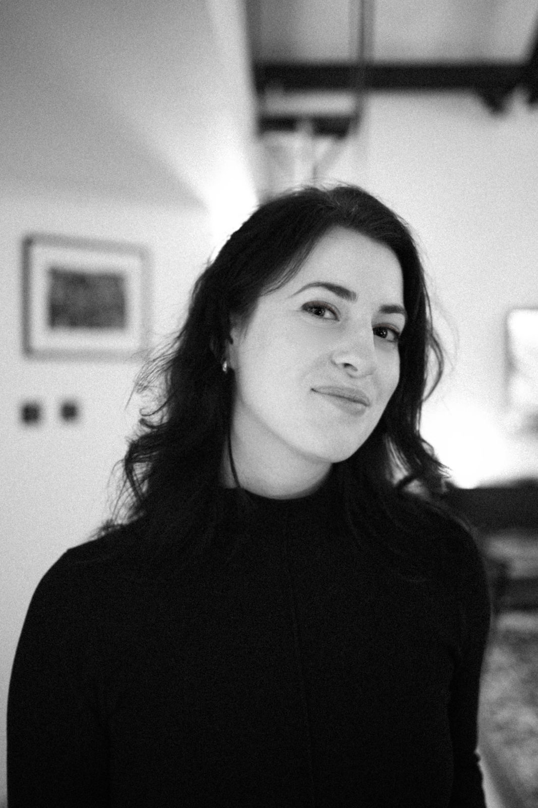

About

Abigail Miller is a curator, cultural strategist, and producer working with artists and institutions to build long-term cultural partnerships and programmes across art, science, and technologies.
Her curatorial practice focuses on art, technology, and power, with a particular interest in how digital culture organises itself and how cultural institutions can function as infrastructure for more human-centred technological futures. She approaches curating as a form of convening, bringing artists, technologists, collectors, and institutions into productive dialogue, and develops public and private partnerships that test new models of funding and opportunity for artists.
Abigail currently leads digital art and artist partnerships at Avant Arte, building on the programme she founded there, and produces the Shift Festival at the Royal Ballet and Opera House (2026). Her projects with artists including Anna Ridler, Beeple, and Linda Dounia have reached global audiences of over 3.5 million. She has initiated major institutional fundraising partnerships with institutions such as LACMA and the V&A, raising more than $800,000 to support their Art and Technology programmes, and facilitated the Whitney Museum's first blockchain acquisition. Previously, as Director of Digital Art at Unit London, she curated the landmark exhibition In Our Code, featuring William Mapan, Tyler Hobbs, Casey Reas, and Zach Lieberman, a project that catalysed their first UK solo presentations and helped establish generative and computational art within the broader contemporary art market.
She is the founder of The Byte Project, a publishing imprint for artists working with technology, with a first edition by Grant Yun in production. She is a jury member for the Digital Art Prize 2026 (Arab Bank Switzerland) and holds advisory roles at Arebyte and the Harold Cohen estate, where she works as Curatorial Researcher.
An author and editor, she speaks internationally on panels, podcasts, and at conferences, sharing her perspective on artist-led experimentation with technology and new models of cultural partnership. She was a Fulbright Scholar to Russia and holds an MA from the Courtauld Institute of Art.